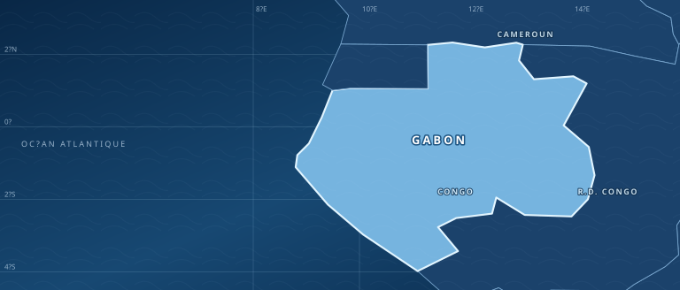

SUIVI DU LITTORAL GABONAIS
Données environnementales
Déchets collectés
0 kg
Dans les zones sélectionnées
0 observation
Biodiversité observée
0 espèces
Signalements de biodiversité
sur 0 zones
Température de l’eau
— °C
Moyenne des mesures partagées
Aucune mesure
Zones à surveiller
0 zones
Pollution ou érosion signalée
À vérifier sur le terrain
OBSERVATIONS
Déchets collectés
0kg collectés
GABON • CÔTE ATLANTIQUE
Zones observées
OCÉAN ATLANTIQUE

Fond : Natural Earth (domaine public) · Cliquez sur un point pour filtrer
Observation À surveiller
SUR LE TERRAIN
Dernières observations
Actualisé automatiquement
| Zone | Observation | Mesure | Contributeur | Date et heure | Statut |
|---|
Aucune observation pour cette zone. Ajoutez une contribution pour commencer.